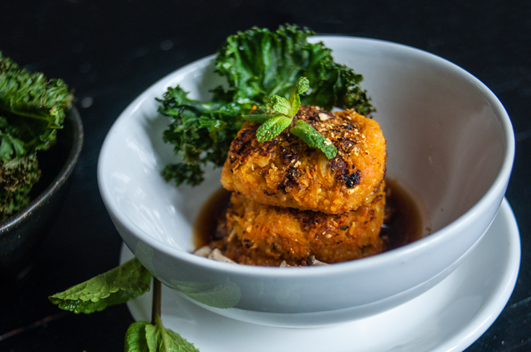

teriyaki veggie patties
2 servings — 40 minutes
Taking the time to cook good food is important, someone said this to me ages ago, never forgot it. It took me a while to understand, I didn't always care about what I ate. I now take the time, because food matters.
Cooking isn't just about getting your hunger pangs to go away, it's also a time to be creative.
With this recipe, I wanted to make something nutritious that would look nice on a plate. I didn't have to go out to get special ingredients, I just looked in my fridge and used items I had on hand. The result was fantastic!
 carrots 2
carrots 2 curry powder 5 g
curry powder 5 g yellow onion 1/2
yellow onion 1/2 garlic 2 cloves
garlic 2 cloves rolled oats 30 g
rolled oats 30 g pumpkin 150 g
pumpkin 150 g
patties
- Peel, and chop 2 carrots into pieces, mince 2 cloves of garlic, chop 1/2 a yellow onion finely, grind 30 g (4 tbsp) of rolled oats into powder, and grate 150 g (~1 cup) of raw pumpkin.
- Mix in 5 g (1 tsp) of curry powder and pulse in a food processor.
- Separate into 6 patties, cook 3 at a time in a pan with a bit of olive oil. Flatten the balls with a spatula and cook until lightly browned, flip and repeat.
 soy sauce 30 ml
soy sauce 30 ml sake 30 ml
sake 30 ml mirin 30 ml
mirin 30 ml whole cane sugar 5 g
whole cane sugar 5 g
sauce
- Mix 30 ml (2 tbsp) of soy sauce, 30 ml of sake, 30 ml (2 tbsp) of mirin and 5 g (1 tsp) of whole cane sugar.
- Pour in a pan, bring to medium-heat and cook for 5 minutes or until thickened.
- Put patties in a plate, drizzle with the teriyaki sauce and your veggies of choice!